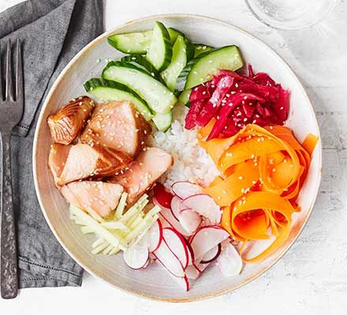

sushibowl

Description
Serve this quick and easy sushi bowl when you're short on time midweek. It contains a tasty mix of salmon, sushi rice, carrot, radish and pickled red cabbage
Ingredients
- 150g sushi rice
- pinch sugar
- 1 tbsp rice vinegar
- 2 cooked salmon fillets (we used teriyaki marinated)
- 1 large carrot , cut into ribbons
- 4 tbsp pickled red cabbage
- handful radishes , sliced
- thumb-sized piece ginger , finely sliced
- ¼ cucumber , halved longways and sliced
- 1 tbsp soy sauce
- 1 tsp sesame seeds (optional)
Directions
- Cook the sushi rice following pack instructions. When cooked, sprinkle over the sugar and vinegar, cover and set aside for 5 mins.
- Divide the rice between two bowls and arrange the other ingredients on top, then drizzle with the soy sauce and sesame seeds, if using.